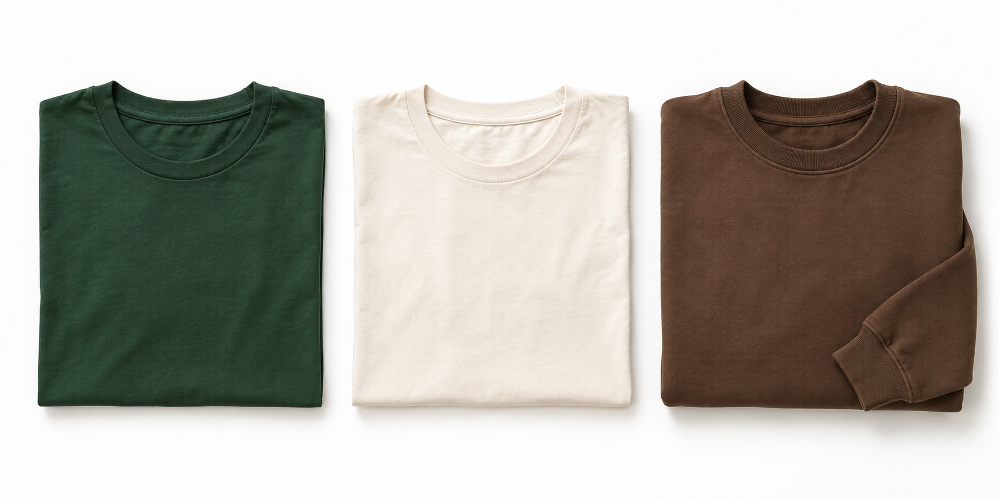

The Good Gardener Store
Clothes for people who care about what they do.
Sample collection: these are clothing concepts, not products currently offered for sale. Prices, final designs, and availability are still to come. No payment is collected.

Good Gardener Tee
Forest green • Concept item
Price to be announced
Good Gardener Tee
Cream • Concept item
Price to be announced
Good Gardener Crewneck
Brown • Concept item
Price to be announced
Your preview bag (0)
Your bag is empty.
Checkout will open when the clothing collection launches. This preview bag is temporary and resets when you leave this page.